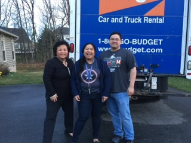
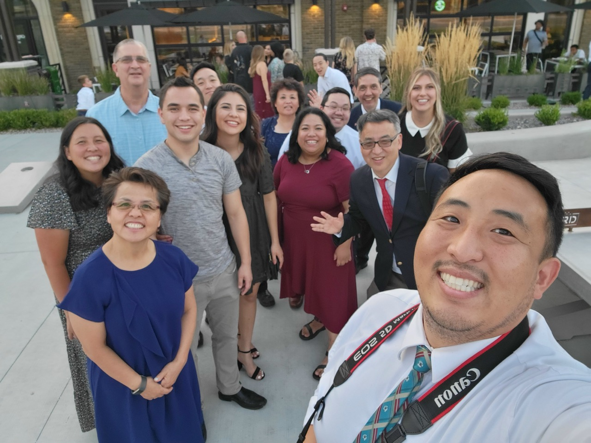
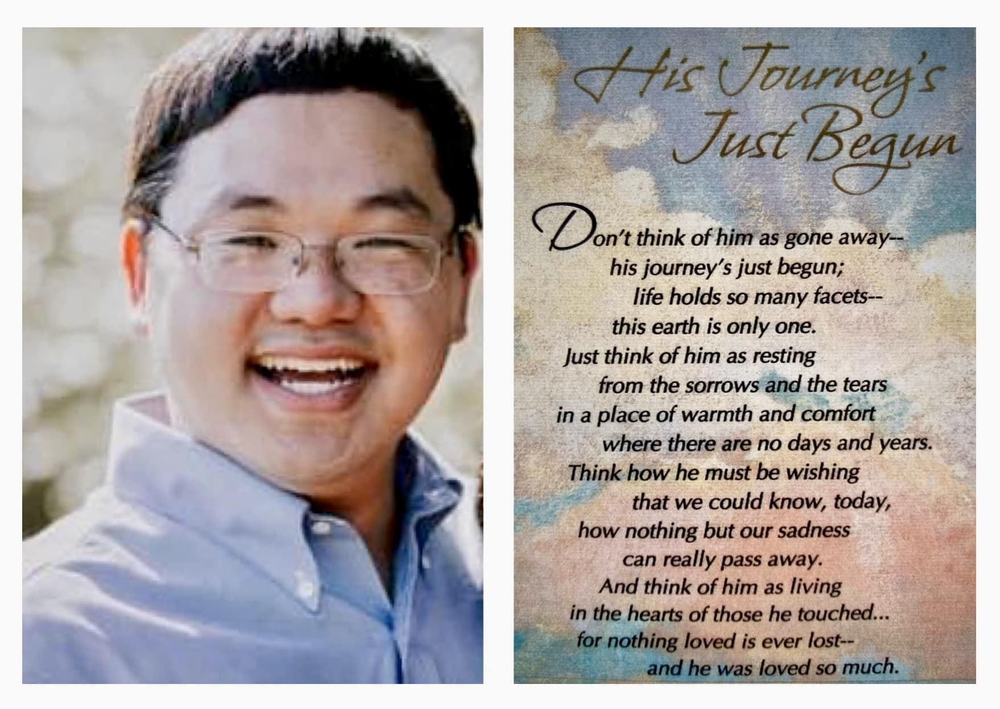
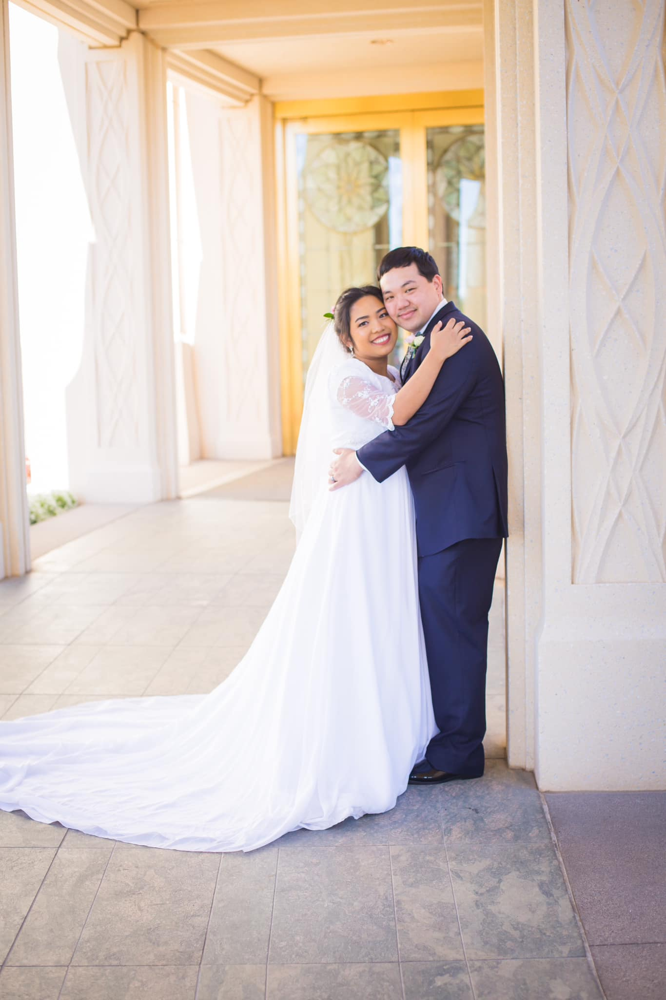

April 2019
Moving from Maryland to Arizona.

Bree and Steven’s Wedding
 More photos
Noeline Nuñez
You are so young to be taken away from us so soon.
Our hearts ache, especially for Meg, on your sudden passing.
The aggressive and extremely rare form of pancreatic cancer you were diagnosed with less than a month ago was a huge curveball no one ever saw coming.
We feel extra sad that you never even had the chance to fight your disease, but relieved at the same time that you no longer will be in so much pain.
I first met you during rehearsal dinner the night before your wedding day to my niece on Thanksgiving weekend 2017.
After that, we’ve had a lot of good conversations and exchanges of opinions on different topics every time we meet on family gatherings since you became part of our clan.
You’re such an intelligent person and I enjoyed all our conversations.
And you have this habit of pushing the middle part of your eyeglasses up your nose bridge with your forefinger.
I have witnessed how you look after and took care of Meg that I remembered she even honored you with an award for best in husbandship category.
You are a great guy and a wonderful human being.
I relished all the conversations we had over the few years I’ve known you and the add-on comments you typically make that shone light on your being a history buff.
I still have the email you sent me in 2021 with detailed itineraries for my planned trip to the DC area.
I will make that trip and follow your guide in your honor.
My trip to AZ this coming weekend was long ago planned for Layla’s 1st birthday and I was looking forward to our usual board and trivia games.
Instead I’ll be seeing you this time at your funeral services.🥲
Thank you, Spence, for the time you have spent with us. Your time on this earth may have been short, but your wonderful memories will remain with us forever.
Our lives are extra special for having been blessed with your wonderful presence.
You will be so dearly missed.
Soar high, Spence. We love you.❤️

Arianne Hidalgo
Yesterday, my brother-in-law Spencer (Meg’s husband), passed away.
He was battling an aggressive and extremely rare type of pancreatic cancer that has led to multiple organ failure.
He was 35 years young and we only found out about his diagnosis about a month ago.
His decline was SO rapid (he hasn’t started chemo) that all of us are in disbelief but we are so thankful for family and friends who were able to come at such short notice.
He passed away peacefully surrounded by family.
Meg’s strength amazes me.
She has stepped up and took great care of Spencer.
My baby sister loved her husband fiercely and this has been so heartbreaking for all us.
Love you, Spencer Irvine!
Thank you for being SO good to Meg and to all of us, for loving my kids and being who you are.
You are loved by so, so many! ❤️
